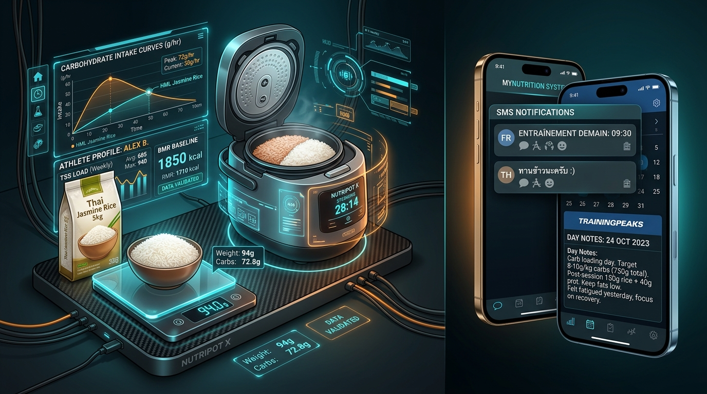

In high-volume ultra-running, body mass is a double-edged sword. While carbohydrate intake during workouts is essential to keep the central nervous system fueled, unmonitored daily caloric intake during recovery or low-volume periods can quietly destroy running economy and place severe biomechanical stress on joint structures.

In this episode, we bridge two critical lessons learned from earlier in the season: the +5 kg “Weight Anomaly” identified during the post-mortem of the Trail du Saint-Jacques (Episode 7), and the acute lumbar crisis experienced during the September training block (Episode 9). To eliminate manual guesswork and protect the spine ahead of Hoka Chiang Mai 173 km, we engineered an automated daily nutrition module in Project Chiang M-AI.
1. Connecting the Dots: From Saint-Jacques (+5kg) to Lumbar Spasm
The Saint-Jacques Retrospective (+5 kg)
During the taper leading up to the Trail du Saint-Jacques in June, training volume was significantly reduced to maximize HRV recovery. While HRV rebounded sharply, daily caloric intake was not adjusted to match the lower energy expenditure. As recorded in Episode 7, I stepped on the scale on race morning at 92.5 kg—a +5 kg increase over a 6-week window.
The Biomechanical Impact on the Lumbar Spine
As detailed in Episode 9, carrying 92.5 kg while running downhill generates ground impact forces equal to 200 to 250 kg of axial force per stride. When training volume ramped back up in late August, these heavy impact forces contributed directly to an acute lumbar spasm (bas du dos bloqué) on September 1st.
┌─────────────────────────────────────────┐
│ 1. Saint-Jacques Taper (Mid-May/June) │
│ - Training volume drops │
│ - Unregulated diet -> +5 kg gained │
│ - Body weight reaches 92.5 kg │
└────────────────────┬────────────────────┘
│
▼
┌─────────────────────────────────────────┐
│ 2. Late August Volume Ramp-Up │
│ - Axial impact shock: 200-250 kg/step│
│ - Severe biomechanical stress on spine│
└────────────────────┬────────────────────┘
│
▼
┌─────────────────────────────────────────┐
│ 3. September 1st Lumbar Spasm │
│ - Acute back lock-up │
│ - Forced pause on running impacts │
└────────────────────┬────────────────────┘
│
▼
┌─────────────────────────────────────────┐
│ 4. Engineering Solution: PR #7 │
│ - Automated BMR & Training Load Math │
│ - Rice Cooker ratio (2.35x) │
│ - TrainingPeaks & SMS Dispatcher │
└─────────────────────────────────────────┘The Hard Realization:
A perfect Zone 2/Zone 3 training distribution means nothing if body weight is left unmonitored. To prevent future lumbar crises and ensure optimal power-to-weight ratio for Chiang Mai’s 9,800m D+, daily nutrition must be calculated dynamically as a function of training load.
2. The Architecture of project_chiang_m_ai.nutrition
To solve this problem systematically, we built a dedicated module in src/project_chiang_m_ai/nutrition.py that computes daily carbohydrate and meal targets based on Basal Metabolic Rate (BMR) and planned workout metrics (Duration, TSS, Elevation Gain).
A. The Hom Mali Rice Cooker Ratio (2.35x)
In Southeast Asian and endurance diets, cooked rice is the primary clean carbohydrate source. However, measuring cooked rice at mealtime is prone to error, whereas measuring dry rice before cooking ensures exact precision.
Through empirical testing with a standard electric rice cooker, we calibrated the expansion ratio for Hom Mali Jasmine Rice: dry rice expands by a factor of 2.35 when cooked (or conversely, the required dry rice weight equals cooked rice divided by 2.35).
By incorporating this constant (HOM_MALI_RATIO = 2.35) into our engine, the system automatically tells the athlete exactly how many grams of dry Hom Mali rice to measure into the rice cooker every morning to cover both lunch and dinner.
B. BMR Baseline & Dynamic Category Matrix
The engine establishes a BMR baseline: - Base Rice per Meal: 120g cooked Hom Mali rice (lunch & dinner). - Base Oats for Breakfast: 60g rolled oats. - Custom BMR Overrides: Adjustable via function arguments or environment variables (BASE_RICE_MEAL, BASE_OATS).
The algorithm then analyzes all planned workouts for the day and categorizes energy requirements across 5 distinct levels:
| Category Key | Workout Condition | Breakfast Oats | Lunch Rice (Cuit) | Dinner Rice (Cuit) | Intra-Workout Carbs | 16h Banana Snack |
|---|---|---|---|---|---|---|
rest 🛋️ |
Rest Day / 0h / 0 TSS | 60g | 120g (Baseline) | 120g (Baseline) | 0g | Rest (0g) |
light 🏃 |
≤ 1.25h & TSS < 75 | 60g (70g W/E) | +20g / +40g | +40g / +20g | 30g | 1 Banana (~25g) |
moderate ⛰️ |
≤ 2.6h or TSS < 160 (e.g. 2h30 Figuerolles) | 60g (80g W/E) | +60g / +60g | +100g / +60g | 120g | 1 Banana (~25g) |
high 💣 |
≤ 4.0h or TSS < 260 | 60g (80g W/E) | +100g / +100g | +130g / +100g | 200g | 1 Banana (~25g) |
peak 👑 |
> 4.0h / Ultra Session | 60g (90g W/E) | +140g / +130g | +180g / +160g | 300g | 1 Banana (~25g) |
Note: On weekends, the algorithm shifts a higher proportion of carbohydrate intake to lunch to replenish glycogen earlier in the day.
3. TrainingPeaks Calendar Automation & Multi-Language Parsing
Automated Day Notes (workoutTypeValueId = 100)
Instead of clogging the workout schedule, daily nutrition plans are uploaded directly to the TrainingPeaks calendar as Day Notes using add_day_note().
In the TrainingPeaks API schema, Day Notes are designated by: - workoutTypeFamilyId = 0 - workoutTypeValueId = 100
Using scripts/generate_all_rice_notes.py, the entire season’s calendar can be populated or updated in bulk with individual day-level error handling.
Multi-Language Note Parsing (FR, EN, TH)
To allow the system to read back existing notes or update entries seamlessly across different environments, parse_rice_note_text() uses non-greedy, case-insensitive regular expressions supporting French, English, and Thai:
# Extracting Lunch Rice Quantity across FR, EN, and TH
midi_match = re.search(
r"(?<![a-zA-Z-])(?:Déjeuner|Lunch|มื้อเที่ยง)[^:\n]*:?\s*[^\d\n]*(\d+)g",
raw_text,
re.IGNORECASE,
)The negative lookbehind (?<![a-zA-Z-]) prevents Déjeuner from matching inside Petit-déjeuner, while [^\d\n]* gracefully accommodates leading Thai descriptor words (such as ข้าวหอมมะลิสุก).
4. Multi-Recipient Free Mobile SMS Notifier
Every morning at 10:00 AM Paris time (0 8 * * * UTC cron), GitHub Actions executes scripts/notify_daily_rice.py.
┌─────────────────────────────────────────────────────────────┐
│ 1. SINGLE TRAININGPEAKS API QUERY │
│ - Fetch today's workouts via get_workouts(today, today) │
│ - Calculate daily rice plan (BMR + TSS/D+ metrics) │
└──────────────────────────────┬──────────────────────────────┘
│
▼
┌─────────────────────────────────────────────────────────────┐
│ 2. RECIPIENT DISPATCH LOOP │
│ - Recipient 1 (User): Format in French (fr) │
│ - Recipient 2 (Wife): Format in Thai (th) │
└──────────────────────────────┬──────────────────────────────┘
│
▼
┌─────────────────────────────────────────────────────────────┐
│ 3. PAYLOAD SANITIZATION & FREE MOBILE HTTP POST │
│ - Convert Emojis to text tags ([RIZ], [Repos], etc.) │
│ - Collapse double newlines (\n\n -> \n) │
│ - Send SMS via Free Mobile API │
└─────────────────────────────────────────────────────────────┘Key Engineering Constraints:
- Single TrainingPeaks API Call: To avoid hit rate limits, the script fetches TrainingPeaks workouts once per run and passes the resulting plan dictionary to all recipients.
- Secrets Formatting: Multi-recipient credentials are stored securely in GitHub Secrets as
USER_ID_1:API_KEY_1:LANG_1,USER_ID_2:API_KEY_2:LANG_2. - Free Mobile Payload Sanitization (
sanitize_for_free_mobile_sms): The Free Mobile SMS API returns an HTTP 400 error if payloads exceed ~450 UTF-8 characters or contain consecutive newlines (\n\n) or 4-byte Emojis. The sanitizer replaces Emojis with bracketed text tags (🍚→[RIZ],🛋️→[Repos]), strips header bloat whenfor_sms=True, and collapses blank lines.
5. Output Verification & Field Example
Below is an example of the generated output for a Light Workout Day (1.0h, 50 TSS):
Standard TrainingPeaks Note (French Display)
🍚 Plan Repas & Riz Hom Mali : 300g (🏃 Séance Léger / Maintien)
Plan Repas & Riz Hom Mali : 300g (🏃 Séance Léger / Maintien)
PLAN NUTRITION DU JOUR - 2026-10-04
Catégorie : 🏃 Séance Léger / Maintien (Durée: 1.0h | TSS: 50.0 | D+: 100m)
RÉPARTITION NUTRITION DU JOUR :
- 🌅 Petit-déjeuner : 60g Flocons d'Avoine
- ⚡ Pendant l'effort : 30g Glucides (Boisson d'effort & Gels)
- ☀️ Déjeuner (Midi) : 140g Riz Hom Mali Cuit
- 🍌 Collation 16h : 1 Banane (~25g glucides)
- 🌙 Dîner (Soir) : 160g Riz Hom Mali Cuit
⚖️ TOTAL RIZ HOM MALI JOUR : 300g Cuit (~127g Sec Rice Cooker)Sanitized Thai SMS Payload (Wife Recipient)
[แผนข้าวหอมมะลิ 2026-10-04]
ประเภท : [Courir] ออกกำลังกายเบาๆ / ประคอง (ระยะเวลา: 1.0h | TSS: 50.0 | ความชัน: 100m)
ตารางโภชนาการประจำวัน:
- [Matin] มื้อเช้า: ข้าวโอ๊ต 60g
- [Effort] ระหว่างออกกำลังกาย: คาร์บ 300g (เครื่องดื่มเกลือแร่ & เจล)
- [Midi] มื้อเที่ยง: ข้าวหอมมะลิสุก 140g
- [16h] อาหารว่าง (16:00 น.): กล้วย 1 ลูก (~25g คาร์บ)
- [Soir] มื้อเย็น: ข้าวหอมมะลิสุก 160g
[Total] รวมข้าวหอมมะลิประจำวัน: 300g สุก (~ข้าวสาร 127g หม้อหุงข้าว)Conclusion: Nutrition as Code for Chiang Mai 173km
By treating daily nutrition not as a passive diary but as executable code linked directly to training metrics, we have closed the feedback loop between training volume, body mass, and spinal health.
With 100% test coverage and automated daily execution via GitHub Actions, the system keeps body weight locked in check, unloads axial pressure from the lumbar spine, and ensures optimal glycogen fueling every single day on the road to Chiang Mai 173 km! 🏔️🍚⚡
Onwards to the final preparation block.